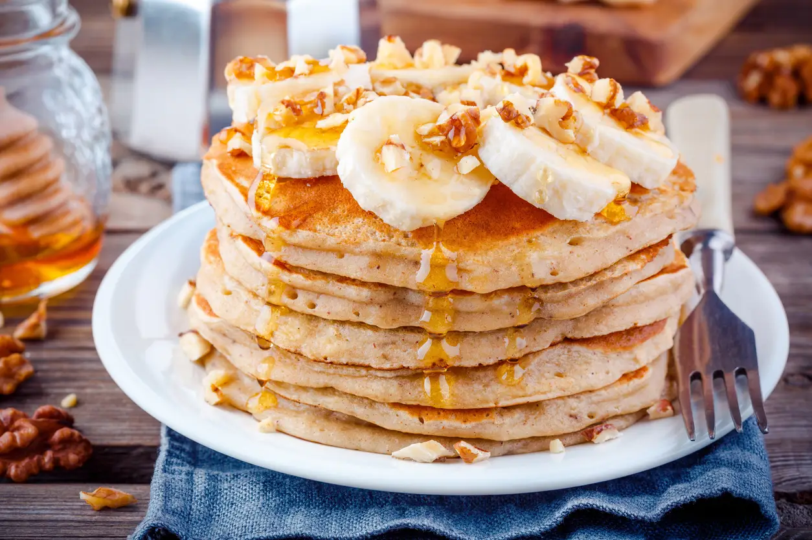

Panqueca de banana
Três ingredientes, uma frigideira e nenhuma farinha de trigo.
Ver ingredientes e preparo
Ingredientes
- 1 banana madura
- 2 ovos
- 4 colheres (sopa) de aveia em flocos
- 1 pitada de canela (opcional)
- Óleo ou manteiga para untar
Modo de preparo
- Amasse a banana com um garfo até virar um purê.
- Misture os ovos, a aveia e a canela.
- Unte a frigideira e aqueça em fogo baixo.
- Coloque uma concha da massa e deixe cerca de 2 minutos de cada lado.